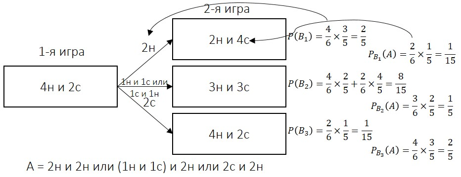
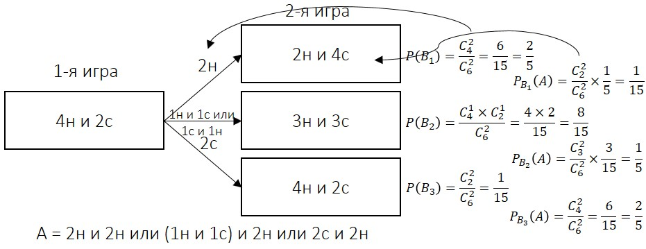

5 ФОРМУЛА ПОЛНОЙ ВЕРОЯТНОСТИ. ФОРМУЛА БАЙЕСА
5.1 ФОРМУЛА ПОЛНОЙ ВЕРОЯТНОСТИ
Одним из следствий совместного применения теорем сложения и умножения вероятностей являются формулы полной вероятности и формула Байеса
События образуют полную группу, если они являются единственно возможными и несовместными исходами испытания
Сумма вероятностей событий $A_1$, $A_2$, ..., $A_n$, образующих полную группу, равна 1:
$P(A_1)+P(A_2)+…+P(A_n)=1$
Пусть событие $A$ может произойти вместе с одним из несовместных событий $B_1$, $B_2$, …, $B_n$, образующих полную группу событий
Поскольку заранее неизвестно, какое из этих событий наступит, события $B_i$, называют гипотезами
Известны вероятности гипотез $P(B_i)$ и условные вероятности $P(A\B_i)$
Вероятность события $A$ определяется из формулы полной вероятности:
$P(A)=P(B_1)×P(A\B_1)+P(B_2)×P(A\B_2)+…+P(B_n)×P(A\B_n)$
где $P(B_1)+P(B_2)+…+P(B_n)=1$
Пример 1
Событие $A$ может наступить лишь при условии появления одного из двух несовместных событий $B_1$ и $B_2$, образующих полную группу событий
Известны вероятности $P\left(B_1\right)=\frac{2}{5}$, $P\left(A\right)=\frac{24}{35}$ и условная вероятность $P\left(A\B_1\right)=\frac{3}{7}$
Найти условную вероятность $P(A\B_2)$
Решение
Так как $P(B_1)+P(B_2)=1$, то $P(B_2)=1-P(B_1)$
Вероятность второй гипотезы равна $P\left(B_2\right)=1-\frac{2}{5}=\frac{3}{5}$
По формуле полной вероятности имеем: $P(A)=P(B_1)×P(A\B_1)+P(B_2)×P(A\B_2)$
Тогда $\frac{24}{35}=\frac{2}{5}×\frac{3}{7}+\frac{3}{5}×P\left(A\B_2\right)$
Решая это уравнение, находим значение искомой условной вероятности $P\left(A\B_2\right)=\frac{6}{7}$
Пример 2
В первой урне находятся 2 белых и 8 черных шаров, а во второй – 3 черных и 7 белых шаров
Из наудачу взятой урны вытаскивается один шар
Найти вероятность того, что этот шар черный
Решение
Пусть событие A – вынутый шар оказался черным, гипотеза $B_1$ заключается в том, что шар вынули из первой урны, а гипотеза $B_2$ – его вынули из второй урны
По условию $P\left(B_1\right)=\frac{1}{2}$; $P\left(B_2\right)=\frac{1}{2}$; $P\left(A\B_1\right)=\frac{8}{10}$; $P\left(A\B_2\right)=\frac{3}{10}$
$P\left(A\right)=P\left(B_1\right)×P\left(A\B_1\right)+P\left(B_2\right)×P\left(A\B_2\right)=\frac{1}{2}×\frac{8}{10}+\frac{1}{2}×\frac{3}{10}=0.55$
Пример 3
В сборочный цех завода поступает 40% деталей из первого цеха, остальные детали поступают из второго цеха
В первом цехе производится 90% стандартных деталей, а во втором – 95% стандартных деталей
Найти вероятность того, что, наудачу взятая сборщиком деталь, окажется стандартной
Решение
Пусть событие A – наудачу взятая деталь стандартна, гипотеза $B_1$ заключается в том, что взятая деталь поступила из первого цеха, а гипотеза $B_2$ – деталь поступила из второго цеха
По условию $P(B_1)=0.4$; $P(B_2)=0.6$; $P(A\B_1)=0.9$; $P(A\B_2)=0.95$
$P(A)=P(B_1)×P(A\B_1)+P(B_2)×P(A\B_2)=0.4×0.9+0.6×0.95=0.93$
Пример 4
В коробке находятся 4 новых и 2 уже использованных теннисных мяча
Для первой игры берут из коробки 2 мяча, а затем их возвращают после игры в коробку
Найти вероятность того, что для второй игры будут вытянуты два новых мяча
Решение
Пусть событие A – для второй игры вынули два новых мяча
Гипотеза $B_1$ – для первой игры вынули два новых мяча
Гипотеза $B_2$ – для первой игры вынули по одному новый и старый
Гипотеза $B_3$ – для первой игры вынули два старых мяча
1 способ (теоремы вероятности; формулы полной вероятности):

$P\left(A\right)=P\left(B_1\right)×P\left(A\B_1\right)+P\left(B_2\right)×P\left(A\B_2\right)+P\left(B_3\right)×P\left(A\B_3\right)=\frac{2}{5}×\frac{1}{15}+\frac{8}{15}×\frac{1}{5}+\frac{1}{15}×\frac{2}{5}=\frac{12}{75}=0.16$
2 способ (формулы комбинаторики; формулы полной вероятности):

5.2 ФОРМУЛА БАЙЕСА
Пусть событие $A$ может произойти вместе с одним из несовместных событий $B_1$, $B_2$, …, $B_n$, образующих полную группу событий (события $B_i$ называют гипотезами)
Известны вероятности гипотез $P(B_i)$ и условные вероятности $P(A\B_i)$
Пусть в результате испытания событие $A$ произошло, тогда вероятности гипотез вычисляются по формуле Байеса:
$P\left(B_i\A\right)=\frac{P(B_i)×P(A\B_i)}{P(A)}$
Где вероятность $P(A)$ рассчитывается по формуле полной вероятности
Формула Байеса также называется теоремой гипотез
Она позволяет переоценить вероятности гипотез $B_i$, принятых до опыта и называемых априорными («a priori» – доопытные) по результатам уже проведенного опыта, т. е. найти условные вероятности $P(B_i\A)$, которые называются апостериорными («a posteriori» – послеопытные)
Задача относится к теме «Формула полной вероятности»
1-я урна – 2 белых и 8 черных шаров
2-я урна – 7 белых и 3 черных шаров
Из наудачу взятой урны вытаскивается один шар
Найти вероятность того, что этот шар черный
Задача относится к теме «Формула Байеса»
1-я урна – 2 белых и 8 черных шаров
2-я урна – 7 белых и 3 черных шаров
Из наудачу взятой урны вытащили один шар, оказавшийся черным
Найти вероятность того, что этот шар был вытащен из первой урны
Задача относится к теме «Формула полной вероятности»
1-й цех – 40% деталей
2-й цех – 60% деталей
В 1-м цехе производится 90% стандартных деталей
В 2-м цехе производится 95% стандартных деталей
Найти вероятность того, что, наудачу взятая сборщиком деталь, окажется стандартной
Задача относится к теме «Формула Байеса»
1-й цех – 40% деталей
2-й цех – 60% деталей
В 1-м цехе производится 90% стандартных деталей
В 2-м цехе производится 95% стандартных деталей
Наудачу взятая сборщиком деталь, оказалась стандартной
Найти вероятность того, что она поступила из второго цеха
Замечание
Формула Байеса применяется для нахождения гипотезы
Пример 1
1-я урна – 2 белых и 8 черных шаров
2-я урна – 7 белых и 3 черных шаров
Из наудачу взятой урны вытащили один шар, оказавшийся черным
Найти вероятность того, что этот шар был вытащен из первой урны
Решение
Пусть событие A – вынутый шар оказался черным
Гипотеза $B_1$ заключается в том, что шар вынули из первой урны
Гипотеза $B_2$ заключается в том, что шар вынули из второй урны
Тогда вероятность того, что черный шар был вытащен из первой урны, обозначается $P(A\B_1)$
$A=I&ч|II&ч$ (I и II урна)
$P\left(B_1\A\right)=\frac{\frac{1}{2}×\frac{8}{10}}{\frac{1}{2}×\frac{8}{10}+\frac{1}{2}×\frac{3}{10}}=\frac{8}{8+3}=\frac{8}{11}$
В числителе – вероятность гипотезы $B_1$
В знаменателе – формула полной вероятности
Пример 2
1-й цех – 40% деталей
2-й цех – 60% деталей
В 1-м цехе производится 90% стандартных деталей
В 2-м цехе производится 95% стандартных деталей
Наудачу взятая сборщиком деталь оказалась стандартной
Найти вероятность того, что она поступила из второго цеха
Решение
Пусть событие A - наудачу взятая деталь стандартна
Гипотеза $B_1$ – взятая деталь поступила из первого цеха
Гипотеза $B_2$ – взятая деталь поступила из второго цеха
Тогда вероятность того, что взятая стандартная деталь поступила из второго цеха, обозначается $P(B_2\A)$
$I&st|II&st$ – формула полной вероятности
$P\left(B_2\A\right)=\frac{0.6×0.95}{0.4×0.9+0.6×0.95}=\frac{0.57}{0.36+0.57}=\frac{57}{93}=\frac{19}{31}$
В числителе – вероятность гипотезы $B_2$
В знаменателе – формула полной вероятности
Пример 3
В коробке – 4 новых и 2 старых теннисных мяча
Для первой игры берут 2 мяча, а затем их возвращают после игры
Для второй игры были вытянуты два новых мяча
Найти вероятность того, что в первой игре только один из взятых мячей был новым
Решение
Пусть событие A – для второй игры вынули два новых мяча
Гипотеза $B_1$ – для первой игры вынули два новых мяча
Гипотеза $B_2$ – для первой игры вынули по одному новый и старый мячи
Гипотеза $B_3$ – для первой игры вынули два старых мяча
Тогда вероятность того, что в первой игре только один из взятых мячей был новым при условии, что во второй игре было взято два новых мяча, обозначается $P(B_2\A)$
$P\left(B_2\A\right)=\frac{P(B_2)×P(A\B_2)}{P(B_1)×P(A\B_1)+P(B_2)×P(A\B_2)+P(B_3)×P(A\B_3)}=\frac{\frac{8}{15}×\frac{1}{5}}{\frac{2}{5}×\frac{1}{15}+\frac{8}{15}×\frac{1}{5}+\frac{1}{15}×\frac{2}{5}}=\frac{8}{2+8+2}=\frac{2}{3}$
В числителе – вероятность гипотезы $B_2$
В знаменателе – формула полной вероятности